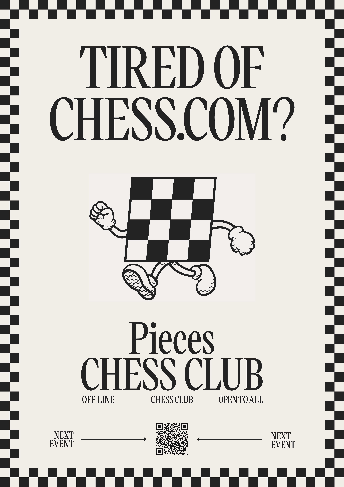

Pieces Chess Club
Pieces Chess Club is a Lisbon-founded social chess club and fundraiser that brings together chess, food, and live DJ sets in one open-to-all night out built to welcome everyone traditional chess spaces tend to exclude.


Pieces Chess Club Lisbon - Photo by @noshwork
Pieces Chess Club Lisbon - Photo by @noshwork
The Challenge
Chess has a participation problem. Traditional chess clubs are dominated by a narrow demographic, competitive, mostly male, often intimidating for newcomers. Meanwhile, a generation of people who had grown up with The Queen's Gambit and online chess were hungry to play, but had nowhere that felt like them.
At the same time, nightlife was shrinking. Club closures across Europe were eroding the social spaces where communities naturally formed. People wanted connection, culture, and something to do with their hands and just not necessarily in a dark room at 2am. The question was: could chess be redesigned as a social experience? One that felt like a night out, not a tournament? That was genuinely welcoming to women, people of colour, LGBTQ+ communities, and anyone who'd ever felt locked out of a "serious" game?


Merch shoot, Lisbon. Design by An-Tim Nguyen
Pieces Chess Club, Berlin - pics by An-Tim Nguyen
My Role and Contributions
I co-founded Pieces Chess Club with Charles Yaw in Lisbon in 2024, taking full ownership of the brand identity, visual design, and community strategy from day one.
Brand & visual identity
I built the visual language of Pieces from scratch: logo, art direction, posters, flyers, and social media assets. The Instagram presence drew on chess through the lens of pop culture, music, and memes, becoming as much a cultural archive as a promotional tool and growing the community to nearly 10,000 followers. This extended into merch production, designing physical products that carried the brand identity off-screen and into the community.
Event design
I directed the experience design of every event: sourcing the right locations, the spatial layout, the atmosphere, the music and food curation philosophy. The deliberate choice to pair chess with food, DJ sets, prioritizing DJs and food from underrepresented communities wasn't just aesthetic. It was a signal about who the space was for.
Community & growth
What started as a monthly night in Lisbon scaled to six European cities: London, Berlin, Vienna, Amsterdam, and Oslo. Average attendance in Lisbon reached 600 people per event. The project raised over €28,000 for charity, with Pieces operating on a voluntary donation model rather than ticket fees keeping it as accessible as possible.
Press & culture
The concept resonated far beyond chess. Pieces was featured in Vogue UK, Huck, and Dazed, framing the club as part of a broader cultural shift in how young people socialise. The real design challenge here wasn't graphic, it was behavioural. How do you get someone who thinks chess is boring, or intimidating, to sit down across from a stranger and play? The answer turned out to be atmosphere, music, and the deliberate removal of everything that made traditional chess feel exclusive.


Promotional poster. Design by Tijl Schneier and An-Tim Nguyen
Street promo London. Design by An-Tim Nguyen
Impact
- • Scaled from Lisbon to six European cities: London, Berlin, Vienna, Amsterdam, and Oslo
- • Average attendance of 600 people per event in Lisbon
- • Nearly 10,000 Instagram followers
- • Over €28,000 raised for charity, including Medical Aid for Palestinians and Norwegian Refugee Council
- • Activations at Waking Life Festival, Portugal and Southbank Centre, London
- • Featured in Vogue UK, Huck, and Dazed
- • Established a residency on Refuge Worldwide radio in Berlin
Reflections
Pieces let me see design things that used emotional points freely. The spirit of Pieces was so special I was interested that the project was focused on having to do around the pieces that you're now given all of "Is it a good party, Ashton, and is good?"
That's both the answer and the question surrounding that a whole brought together: In groups like work/movements and competition we are interested that good design actually has a lot to sit about and the energy. In a bigger light you can guide some within that Pieces taught me that the might in the show before being worth nothing.